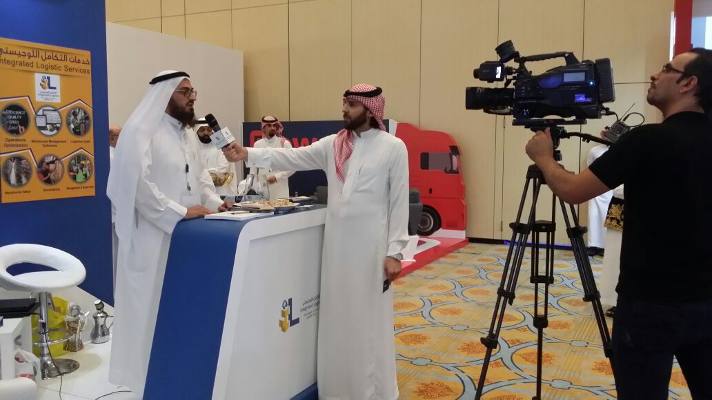

- الرئيسية
- الأحداث والأنشطة
- مؤتمر سلاسل الإمداد
مؤتمر سلاسل الإمداد
حضور ومشاركة فريق التكامل المتحدة في مؤتمر سلاسل الإمداد، ولقاء نخبة من قادة القطاع اللوجستي في المملكة.
حضر فريق «التكامل المتحدة» مؤتمر سلاسل الإمداد الذي يجمع صنّاع القرار في القطاع اللوجستي: مدراء سلاسل الإمداد، ومدراء العمليات، ومسؤولي المستودعات في كبرى المنشآت السعودية.
ركّزت مشاركتنا على محور نراه محورياً وغالباً ما يُهمَل: أن أغلب مشكلات سلسلة الإمداد لا تبدأ في النقل أو التوريد، بل داخل المستودع نفسه — في دقة الاستلام، وانضباط مواقع التخزين، وصحة الأرصدة الدفترية.
أتاح المؤتمر لفريقنا تبادل الخبرات حول مؤشرات الأداء الأنسب لقياس كفاءة المستودع، وأفضل الممارسات في الجرد الدوري وفق تصنيف ABC، وأثر الإجراءات القياسية (SOPs) في استدامة نتائج التحسين.
- نقاش حول مؤشرات الأداء الرئيسية لكفاءة المستودعات
- تبادل خبرات في الجرد الدوري وتصنيف ABC
- بناء شبكة علاقات مع قادة القطاع اللوجستي
لقطات من الميدان
{kind=link}
{kind=link}
{kind=link}
{kind=link}
{kind=link}
اطّلع أيضاً على
جاهزون لرفع كفاءة مستودعك؟
احجز استشارة أولية مع فريق التكامل المتحدة — نستمع لتحدياتك، ونحدد معك أسرع طريق لخفض التكلفة ورفع الدقة.